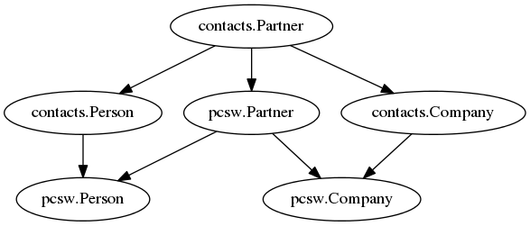

20120905¶
Today I solved two very subtle problems:
- add (in an application) the fields created and modified
to contacts.Partner using
lino.mixins.CreatedModified - imported fields were not disabled on a Partner
The trick was to override contacts.Partner instead of defining a CpasPartner mixin.
It is another usage example of our relatively new
lino.Lino.override_modlib_models in the application’s settings:
override_modlib_models = [
'contacts.Partner',
'contacts.Person', 'contacts.Company',
'households.Household'
]
which required lino.modlib.contacts.models.Partner to become overridable:
class Meta:
abstract = settings.LINO.is_abstract_model('contacts.Partner')
One difficulty was that this caused a Diamond inheritance structure:

And Django still has a problem with Diamond inheritance (see Django ticket #10808). Here is one visible aspect of the problem:
"""
Invoke using::
$ python manage.py run 0905.py
Output before the workaround:
Company(language=u'de',is_active=True,language=u'de')
After:
Company(name='Test',language=u'de',is_active=True)
"""
from lino.core.modeltools import obj2str
from lino_welfare.modlib.pcsw.models import Company
c = Company(name="Test")
print obj2str(c)
Because we don’t want Lino to require to patch Django,
I wrote a workaround in lino.dd.on_class_prepared().
Lino-Welfare¶
Partner haben jetzt zwei neue Felder created und modified.
Person hat jetzt (wie geplant) ein neues Feld is_client. Mit diesem Feld kann man also eine bestehende Person zu einem ´Klienten machen. Folgendes kleines Detail bestätigt, dass das Ganze vom Konzept her stimmt (ich hatte ein bisschen Angst, wie Lino das hinkriegen würde, aber er hat das super gemacht):
Wenn ich eine bestehende Person X zu einem Klienten mache, dann nicht deren NISS ausfülle, und dann eine zweite Person Y ebenfalls zu einem Klienten machen will, dann kriege ich eine Meldung “AJAX communication failed”, und auf dem Server steht:
Traceback (most recent call last): File "t:\hgwork\lino\lino\ui\extjs3\ext_store.py", line 1093, in form2obj if f.form2obj(ar.request,instance,form_values,is_new): File "t:\hgwork\lino\lino\ui\extjs3\ext_store.py", line 202, in form2obj return self.set_value_in_object(request,instance,v) File "t:\hgwork\lino\lino\utils\mti.py", line 238, in set_value_in_object insert_child(obj,self.child_model) File "t:\hgwork\lino\lino\utils\mti.py", line 172, in insert_child new_obj.save() File "t:\hgwork\welfare\lino_welfare\modlib\pcsw\models.py", line 599, in save super(Client,self).save(*args,**kw) File "t:\hgwork\lino\lino\modlib\contacts\models.py", line 185, in save super(Partner,self).save(*args,**kw) File "t:\hgwork\lino\lino\utils\dblogger.py", line 52, in save super(DiffingMixin, self).save() File "t:\hgwork\lino\lino\mixins\__init__.py", line 262, in save super(CreatedModified, self).save(*args, **kwargs) File "l:\snapshots\django\django\db\models\base.py", line 476, in save self.save_base(using=using, force_insert=force_insert, force_update=force_update) File "l:\snapshots\django\django\db\models\base.py", line 564, in save_base result = manager._insert([self], fields=fields, return_id=update_pk, using=using, raw=raw) File "l:\snapshots\django\django\db\models\manager.py", line 203, in _insert return insert_query(self.model, objs, fields, **kwargs) File "l:\snapshots\django\django\db\models\query.py", line 1581, in insert_query return query.get_compiler(using=using).execute_sql(return_id) File "l:\snapshots\django\django\db\models\sql\compiler.py", line 910, in execute_sql cursor.execute(sql, params) File "l:\snapshots\django\django\db\backends\util.py", line 40, in execute return self.cursor.execute(sql, params) File "l:\snapshots\django\django\db\backends\sqlite3\base.py", line 337, in execute return Database.Cursor.execute(self, query, params) IntegrityError: column national_id is not uniqueDas ist genau das, was wir wollen: ein Klienten ohne NISS ist okay, aber solange der nicht eine NISS bekommen hat, darf man is_client nicht benutzen.
TODO: statt “AJAX communication failed” sollte er zumindest sagen “IntegrityError: column national_id is not unique”, oder (die Luxus-Version) “Kann Person X nicht zu einem Klienten machen, weil Klient Y noch keine NISS bekommen hat”
Aber jetzt erstmal Checkin und Feierabend.